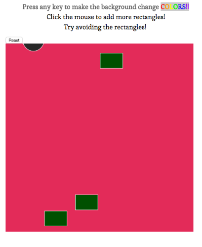
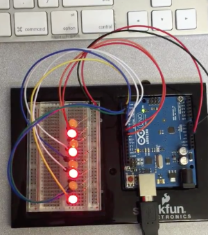
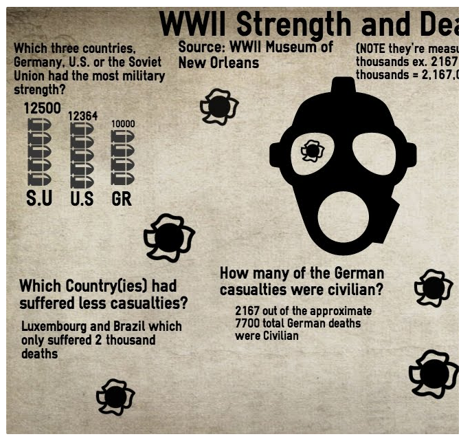

Toggle navigation
SEP Guide
9th Grade
10th Grade
11th Grade
Skills
Welcome to the 10th grade SEP class. Here you will find lots of work done by students in various topics.
Processing:
Is a simple programming environment that allows students to “sketch” ideas in code using java.

Check out Marilyn's project!
Electronics:
A subject where students can use Arduino (an open-source electronics platform based on easy-to-use hardware and software) and Makey Makey (a user interface where the students "are the keyboard")

Check out Ashley's project project!
Data:
Students are using Microsoft Excel to create spreadsheets like the teachers do!

Check out luis' project!